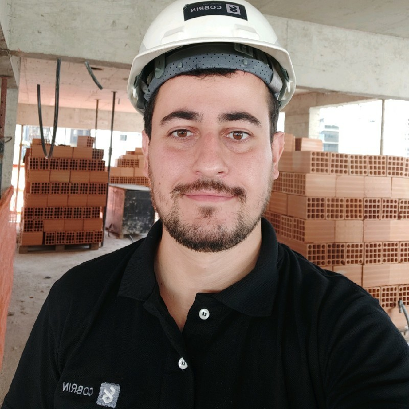

Thiago Costa Correia de Souza

Informações Pessoais
Sou brasileiro, nasci em Belo Horizonte/ Minas Gerais
Ainda moro onde nasci, no bairro Floresta
Me ogulho de:
- Ser formado como Cozinheiro Profissional e Alta Gastronomia
- Ser formado como Engenheiro Civil
- Ter pós graduado em Gestão Ágil de Projetos
- Ser um baita de um pescador
- Estar estudando Desenvolvimento Web na Trybe
Voltar a foto do Thiago
Ir para o blog da Trybe
- Nome
- Me orgulho de